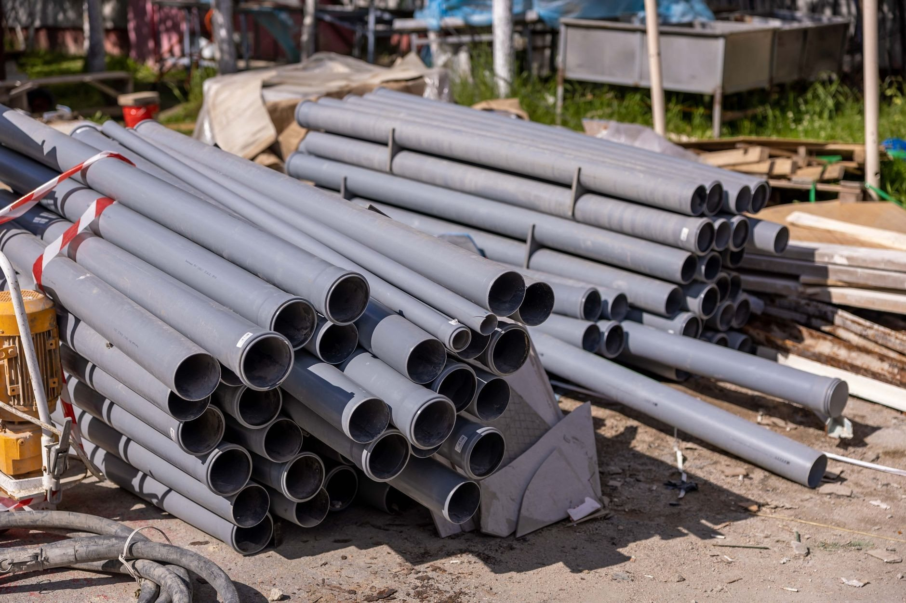

Instalacje to nasza codzienna praca
Od ponad 10 lat prowadzimy instalacje na budowach domów w Słupsku i okolicy.

Instalatorzy ze Słupska
Aqua-Technik Sebastian Zawadzki od ponad 10 lat robi instalacje sanitarne, grzewcze i gazowe w Słupsku i okolicy. Najwięcej pracujemy przy domach jednorodzinnych w budowie: rozprowadzamy wod-kan, centralne ogrzewanie i podłogówkę, składamy kotłownię i robimy przyłącza.
Wchodzimy na budowę wtedy, kiedy jest na to etap, i pilnujemy kolejności z innymi ekipami, żeby nikt nie kuł świeżych tynków ani nie zalewał wylewką niesprawdzonych rur. Każdą instalację sprawdzamy pod ciśnieniem, zanim zostanie zakryta. Cenę i termin znasz przed startem.
Nie przyjmujemy drobnych zleceń, takich jak wymiana baterii czy udrażnianie odpływu. Takie wyjazdy rozbijają terminy na budowach, a my wolimy dowieźć całą instalację na czas. Jeśli budujesz dom, rozbudowujesz go albo wymieniasz kotłownię, zadzwoń i opisz zakres.
Dobrze wiedzieć
Czy przyjmujecie drobne naprawy?
Nie. Robimy instalacje w całości: w nowych domach, przy rozbudowach i przy wymianie kotłowni. Z wymianą baterii czy udrażnianiem odpływu lepiej zadzwonić do serwisu awaryjnego.
Na jakim etapie budowy wchodzicie?
Najlepiej w stanie surowym zamkniętym, przed tynkami i wylewkami. Wtedy rozprowadzamy rury, a po wylewkach wracamy na montaż urządzeń i uruchomienie ogrzewania.
Podłogówka w całym domu czy tylko na parterze?
Da się zrobić jedno i drugie, a także układ mieszany z grzejnikami na piętrze. Podpowiemy, co ma sens przy wybranym źródle ciepła i układzie pomieszczeń.
Czy podłączycie pompę ciepła?
Tak. W nowych domach podłączamy pompę ciepła do instalacji c.o. i ciepłej wody, razem z buforem i zasobnikiem, jeśli projekt je przewiduje.
Jak wygląda wycena?
Zaczynamy od rozmowy: metraż, liczba łazienek, rodzaj ogrzewania i projekt instalacji, jeśli już jest. Na tej podstawie podajemy cenę zakresu i termin wejścia na budowę.
Masz projekt domu? Zapytaj o cenę instalacji
Wystarczy jedna rozmowa o projekcie i harmonogramie budowy. Potem podajemy cenę i termin wejścia.